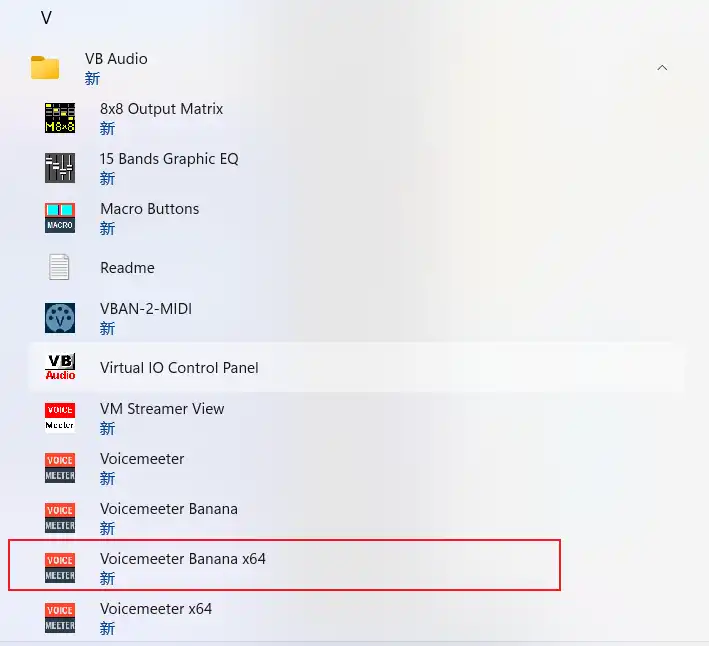
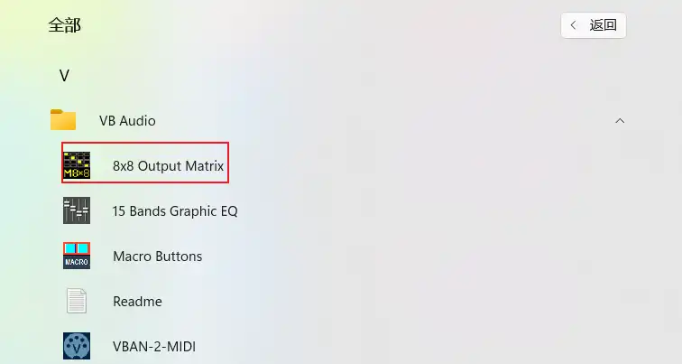
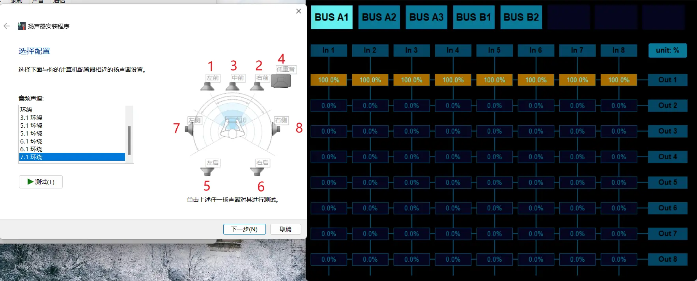
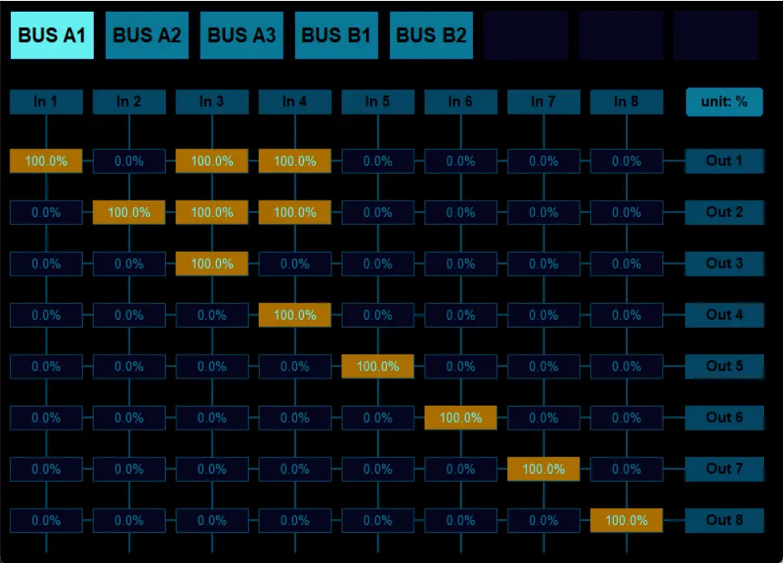
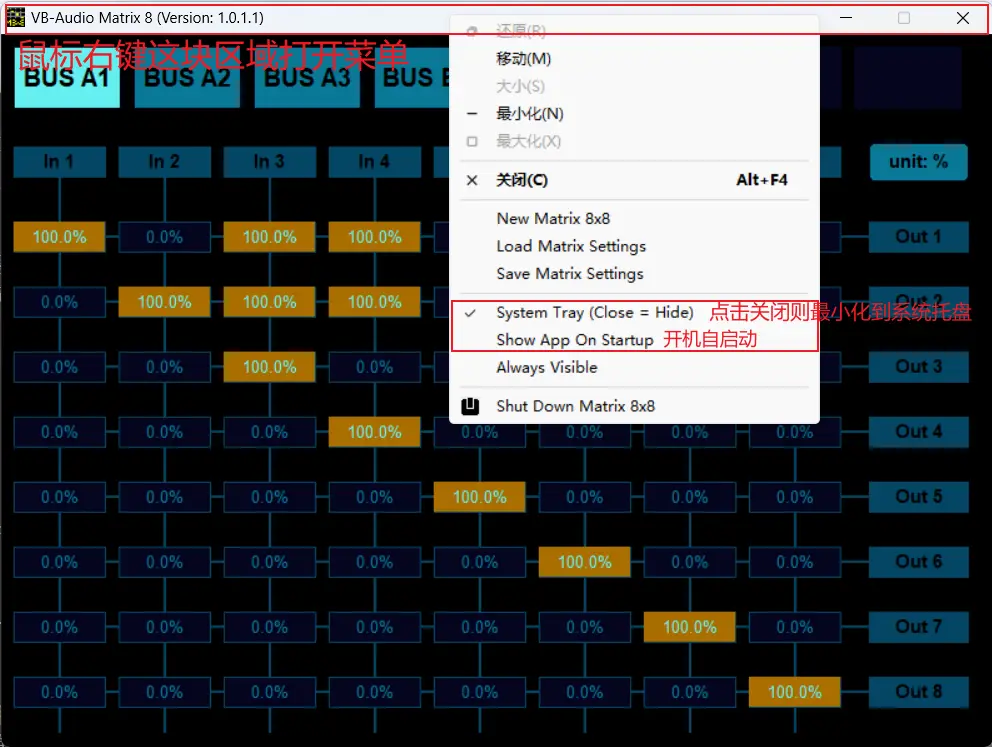
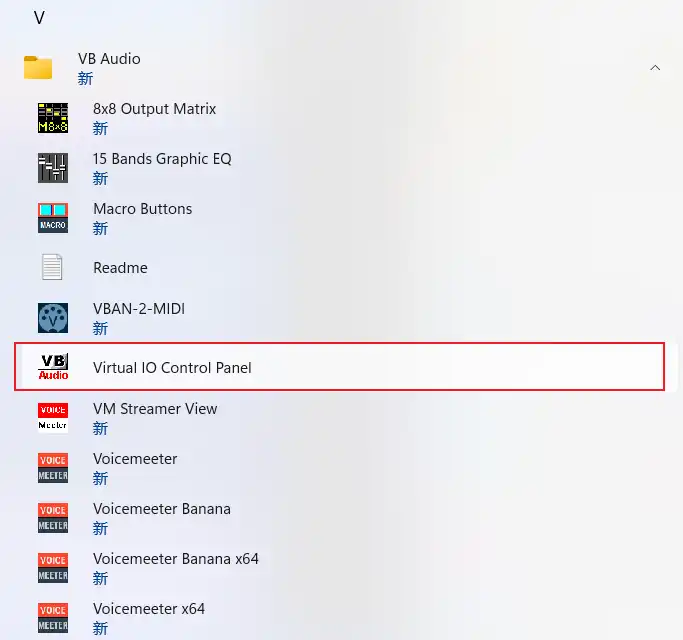

组一个廉价后环绕声
前言
闲来无事，掏出了许久之前买的两只联想Thinkplue-K3 Pro。本来是打算给家里的投影仪用的，但是一时半会还不能回家，于是先给自己的电脑用上先😋。
这两只音响的低频表现过于垃圾，想着搜索一下能不能给音响加一个倒相孔，但是偶然一个走神，刷到了b站视频教我怎么用外接音响配合电脑音响组成环绕声。欸🤓，那就来研究一下吧。
软件安装
使用一个虚拟声卡软件Voicemeeter，可以将不同品牌的音响分别映射到不同的声音输出通道。~~万物断连变万物互联啦。~~可惜的是这个方案只支持在电脑端使用，想在电视机上用只能把电脑连电视了。
进入Voicemeeter官网，选择Banana版本即可（Potato版本是捐赠版，可以控制5个声音设备，但能控制3个设备的Banana应该够我们用了吧）
https://vb-audio.com/Voicemeeter/index.htm


下载完成后解压文件，双击安装，无脑下一步（Voicemeeter无法更改安装目录）

安装完重启一遍电脑。
配置软件
在开始菜单中打开Voicemeeter Banana ×64（应该不会还有人用32位电脑吧🧐）

关闭不必要的功能。关闭蓝色框内的功能，只需要关注红色框里的内容。
红色框里，只需开启A1，A2，A3，其他功能关闭。A1，A2，A3是输入通道，接了多少个设备，就开多少个通道（电脑内置音响也算一个通道）。

接下来配置输入通道，在A1，A2，A3分别选择音响设备，其中A1最好选择的是主力设备。

左侧WDM和MME均可选择，其中WDM延迟较低，MME对设备兼容性好。我的电脑选WDM会有电流声，于是选择了MME

然后映射声道，点击红框，换成所需的声道。鼠标左键切换下一个，鼠标右键切换上一个。Normal是前左和前右喇叭，MIX down A、MIX down B是所有喇叭，rear only是后喇叭，center only是前中置喇叭。

这里提供的预设似乎有些少，那么接下来就该请出另一个软件了：8x8 Output Matrix。它基于Voicemeeter Banana的声道设置运行，这里可以更自由地映射声道。

首先，在Voicemeeter Banana中设置声道映射模式为Normal mode，然后进入8x8 Output Matrix，选择设备（Bus A1、A2、A3）进行映射。In指的是电脑视频的音频信号，Out指的是音响的物理声道，数字的对应关系如图。

例如，我希望我的电脑扬声器输出前左、中置、前右、低音四个信号，这时候我只需要关注Out1和Out2这两行，因为我电脑扬声器在物理上只有两个：左扬声器和右扬声器，其他行怎么调都不会有反应。前左、前右正常输出，中置、低音同时输出到电脑的两个扬声器，则需要把In3分配给Out1和Out2，In4也要分配给Out1和Out2。如下图所设定。

配置好后，在任务栏搜索框里搜索“声音”

点击“播放”，找到Voicemeeter Input，鼠标右键点击它，先设为默认设备，再点击配置扬声器。

然后选择合适的声道预设（我选的是5.1环绕），点击绿框内的喇叭，对应声道会发声，可以测试每个声道是否正确。如果之前选择错误，可以打开8x8 Output Matrix重新调整声道映射方法。

最好不要存在无声音的声道，否则一些5.1声道的电影或游戏会失去那个声道的声音。调整好之后点下一步。如果你有低音单元，请不要开启全音域扬声器。

至此，我们已经可以享用环绕声啦。
设置开机自启动
Voicemeeter需要一直在后台才能输出声音。最好把它设置为开机自启动。
打开Voicemeeter Banana，点击Menu，如图勾选。

为什么要勾选System Tray呢？勾选上之后，叉掉Voicemeeter Banana时就不会完全退出软件了，而是龟缩到系统托盘里。
同样，8x8 Output Matrix这个软件也需要保持后台运行。

降低延迟
据说打游戏时声音略有延迟，此时可以以管理员身份打开Pannel

点击Options，点击Set Max Latency:4096 smp

这样会降低总体声音延迟。
蓝牙、有线音响混用
但是，如果你连接的是蓝牙音响，会发现蓝牙音响比电脑内置音响发声慢。这时候要单独调整延迟。打开Voicemeeter Banana，点击Menu，然后点System settings

由于我们无法把延迟设成负数，只能让电脑内置音响延迟发声以达到电脑音响和蓝牙音响同步发声的目的。找到OUT A1，那一列可以调整A1，A2，A3的延迟。

可以打开Voicemeeter Banana把声道映射全改成MIX down B，再打开声音预设，点击绿框内喇叭播放声音测试电脑音响是否和蓝牙音响同步发声。
不过这样一来，上一步降低的延迟又提高了（悲）
调整音量大小
刚配置好后会发现，系统的调整音量功能无法使用了！！！当然，这是有解决办法的。
打开pannel，勾选上Enable Windows Volume Control，重启一下电脑就行。
参考文献
旧音响别扔，免费组建5.1环绕声，感受悔恨之泪，VoiceMeeter组多设备详细教程